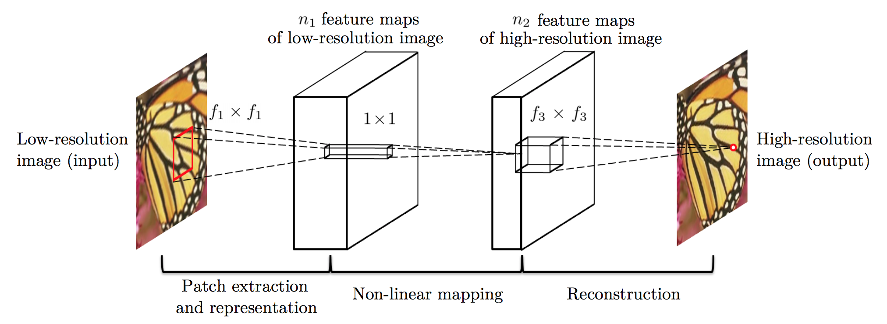

SRCNN是首个使用深度学习进行超分辨率的算法，在此基础上演化出了一系列类似的神经网络。因为该网络结构较简单且效果不错，所以就先对它进行学习。
图像超分辨率
超分辨率（Super Resolution）任务的目标就是将输入的低分辨率的图像转换为高分辨率的图像。可以理解为一种基于较少像素点，填充较多像素点的方式。图像超分辨率与图像去噪、图像去模糊等一脉相承，图像去噪关注在图像尺寸不变的情况下，将被“污染”的像素替换为正确的像素，有些工具在超分辨率的同时也可以达到降噪的目的。
SRCNN结构及原理

SRCNN的结构如图所示，主要由三个卷积层构成。
第一层为conv层(实现数据读入)
输入：低分辨率补丁
卷积核：c*f1*f1*n1（其中，c为输入图像通道数，文中取YCrCb中Y通道，c=1；f1=9；n1为当前卷积核输出深度取64）
作用：提取图像特征。从低分辨率图像中提取多个patch图像块，每个块被卷积操作表示为多维的向量（维数等于filter的数量），所有的特征向量组成特征矩阵（feature maps）
第二层为conv层(实现非线性多个映射)
输入：第一层输入
卷积核：n1*1*1*n2（其中，n1为前一卷积层输出数据深度64，n2为当前层数据输出深度为32）
作用：非线性映射：将n1维特征矩阵，通过卷积操作实现非线性映射，变成另一n2维特征矩阵
第三层为conv层(实现重建)
输入：第二层输出
卷积核：n2*f3*f3*c（其中，n2为前一个卷积层输出数据深度，f3=5，c为重建后高分辨率图通道数，和输入保持一致c=1）
作用： 重构图像：等于是个反卷积的过程，将n2的特征矩阵还原为超分辨图像